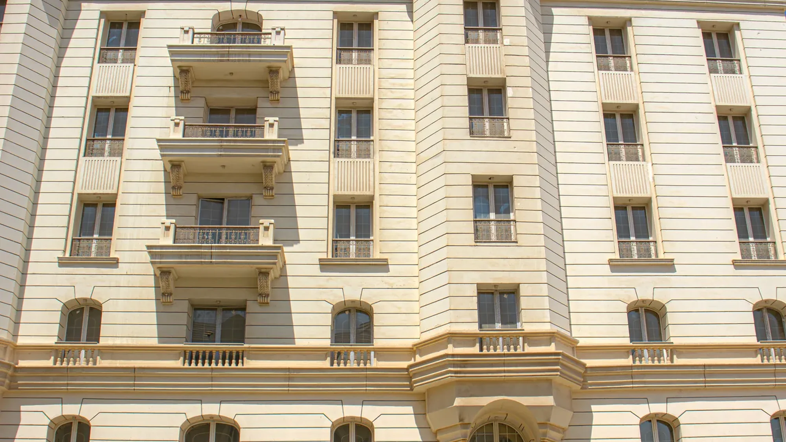

Surfaces Designed as Architectural Materials.
Explore MarmoFiber finishes across marble, mineral stone, concrete, sandstone, and earth-inspired collections.
01 — Five Collections
Five families. One material logic.
Each collection is a distinct architectural identity rather than a colour chart. Choose the family that matches the building's character, then narrow to the finish that behaves the way the elevation or the interior needs it to.
Marble Collection
A refined collection inspired by the movement, softness, and visual depth of marble.
Mineral Stone Collection
Natural and textural surfaces influenced by limestone, weathered rock, and mineral formations.
Sandstone Collection
Textured surfaces inspired by sediment, sand, and naturally eroded stone.
Urban Collection
Controlled concrete and fine-grain finishes for contemporary architecture.
Earth Collection
Warm mineral colours inspired by clay, soil, cocoa, and terracotta.
02 — Finishes
Sixteen finishes.
16 finishes
Finish images are photographed samples and are shown for visual reference. Colour, tone and texture vary between batches and under different lighting. Always confirm a selection from a current physical sample.
Material Sampling
See it. Touch it. Specify it.
Request a MarmoFiber sample and experience the finish, texture, tonal depth, and material character before making your project selection.